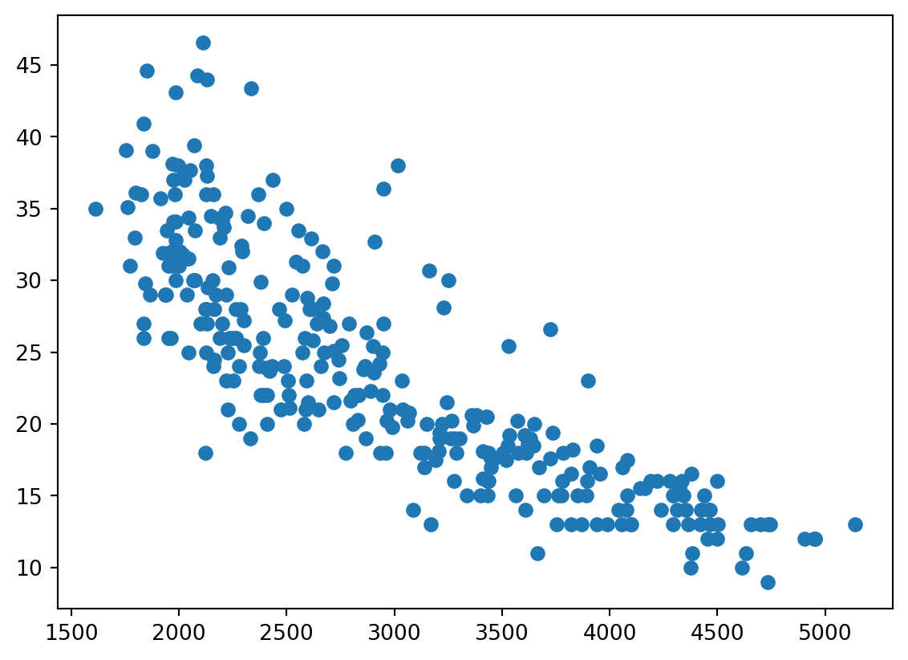

Plot = import("https://esm.sh/@observablehq/plot")
d3 = require("d3@7")
topojson = require("topojson")
MathJax = require("https://cdnjs.cloudflare.com/ajax/libs/mathjax/3.2.2/es5/tex-svg.min.js").catch(() => window.MathJax)
tf = require("https://cdn.jsdelivr.net/npm/@tensorflow/tfjs@latest/dist/tf.min.js").catch(() => window.tf)
THREE = {
const THREE = window.THREE = await require("three@0.130.0/build/three.min.js");
await require("three@0.130.0/examples/js/controls/OrbitControls.js").catch(() => {});
await require("three@0.130.0/examples/js/loaders/SVGLoader.js").catch(() => {});
return THREE;
}
function sample(f, start, end, nsamples=100) {
let arr = [...Array(nsamples).keys()]
let dist = end - start
function arrmap(ind) {
const x = (ind * dist) / nsamples + start;
return [x, f(x)];
}
return arr.map(arrmap)
}
function sigmoid(x){
return 1 / (1 + Math.exp(-x));
}
function sum(x) {
let s = 0;
for (let i = 0; i < x.length; i++ ) {
s += x[i];
}
return s;
}
function mean(x) {
let s = 0;
for (let i = 0; i < x.length; i++ ) {
s += x[i];
}
return s / x.length;
}
function cross_ent(x, y) {
return y ? -Math.log(sigmoid(x)) : -Math.log(sigmoid(-x));
}
function se(x, y) {
return (x - y) * (x - y);
}
function shuffle(array) {
let currentIndex = array.length, randomIndex;
// While there remain elements to shuffle.
while (currentIndex > 0) {
// Pick a remaining element.
randomIndex = Math.floor(Math.random() * currentIndex);
currentIndex--;
// And swap it with the current element.
[array[currentIndex], array[randomIndex]] = [
array[randomIndex], array[currentIndex]];
}
return array;
}
function acc(x, y) {
return Number(y == (x > 0));
}
function grid_func(f, width, height, x1, y1, x2, y2) {
let values = new Array(width * height);
const xstride = (x2 - x1) / width;
const ystride = (y2 - y1) / height;
let y = 0;
let x = 0;
let ind = 0;
for (let i = 0; i < height; i++ ) {
for (let j = 0; j < width; j++, ind++) {
x = x1 + j * xstride;
y = y1 + i * ystride;
values[ind] = f(x, y);
}
}
return {width: width, height: height, x1: x1, y1: y1, x2: x2, y2: y2, values: values};
}
function get_accessors(keys, byindex=false) {
let isString = value => typeof value === 'string';
let index = 0;
let indexmap = {};
let accessors = [];
for (let i = 0; i < keys.length; i++){
let k = keys[i];
if (Array.isArray(k)) {
let access = isString(k[0]) ? (x => x[k[0]]) : k[0];
if (byindex) {
if (isString(k[0]) && !(k[0] in indexmap)) {
indexmap[k[0]] = index;
index++;
}
let accessindex = indexmap[k[0]];
access = x => x[accessindex];
let process = k[1];
let final_access = x => process(access(x));
accessors.push(final_access);
}
else {
let process = k[1];
let final_access = x => process(access(x));
accessors.push(final_access);
}
}
else {
let access = isString(k) ? (x => x[k]) : k;
if (byindex) {
if (isString(k) && !(k in indexmap)) {
indexmap[k] = index;
index++;
}
let accessindex = indexmap[k];
access = x => x[accessindex];
}
accessors.push(access);
}
}
return accessors;
}
function predict(obs, weights, keys=["0", "1", "2", "3"], byindex=false) {
let isString = value => typeof value === 'string';
let accessors = get_accessors(keys, byindex);
let output = weights[0];
let wi = 1;
for (let i = 0; (i < keys.length) && (wi < weights.length); i++, wi++){
output += weights[wi] * accessors[i](obs);
}
return output;
}
function mean_loss(f, data, weights, keys, label, l2=0) {
let reg = 0;
if (l2 > 0){
for (let i = 1; i < weights.length; i++) {
reg += weights[i] * weights[i];
}
}
const isString = value => typeof value === 'string';
const get_label = isString(label) ? (x => x[label]) : label;
return mean(data.map(x => f(predict(x, weights, keys), get_label(x)))) + l2 * reg;
}
function get_domains(data, accessors, margin=0.1) {
let domains = [];
for (let i = 0; i < accessors.length; i++){
let xdomain = d3.extent(data, accessors[i]);
let xdsize = (xdomain[1] - xdomain[0]);
let xmin = xdomain[0] - xdsize * margin;
let xmax = xdomain[1] + xdsize * margin;
domains.push([xmin, xmax]);
}
return domains;
}
function logisticPlot2d(data, weights, keys, label, interval=0.05) {
const accuracy = mean_loss(acc, data, weights, keys, label);
let isString = value => typeof value === 'string';
let accessors = get_accessors(keys);
let index_accessors = get_accessors(keys, true);
let domains = get_domains(data, accessors);
const get_label = isString(label) ? (x => x[label]) : label;
return Plot.plot({
x: {tickSpacing: 80, label: "x"},
y: {tickSpacing: 80, label: "y"},
title: "Accuracy: " + accuracy.toFixed(3),
color: {type: "linear", legend: true, scheme: "BuRd", domain: [-0.5, 1.5]},
marks: [
Plot.contour({
fill: (x, y) => sigmoid(predict([x, y], weights, index_accessors)),
x1: domains[0][0], y1: domains[1][0], x2: domains[0][1], y2: domains[1][1], interval: interval,
}),
Plot.dot(data, {x: accessors[0], y: accessors[1], stroke: x=> (get_label(x) ? 1.35 : -0.35)})
]
});
}
function logisticLossPlot2d(data, weights, keys, label) {
const loss = mean_loss(cross_ent, data, weights, keys, label);
let isString = value => typeof value === 'string';
let accessors = get_accessors(keys);
let index_accessors = get_accessors(keys, true);
let domains = get_domains(data, accessors);
const get_label = isString(label) ? (x => x[label]) : label;
return Plot.plot({
x: {tickSpacing: 80, label: "x"},
y: {tickSpacing: 80, label: "y"},
title: "Loss: " + loss.toFixed(3),
color: {type: "linear", legend: true, scheme: "BuRd", domain: [0, 5]},
marks: [
Plot.contour({
value: (x, y) => predict([x, y], weights, index_accessors),
fillOpacity: 0.2,
stroke: "black", x1: domains[0][0], y1: domains[1][0], x2: domains[0][1], y2: domains[1][1],
thresholds: [-1e6, 0, 0.00001]
}),
Plot.dot(data, {x: accessors[0], y: accessors[1], stroke: x=> cross_ent(predict(x, weights, keys), get_label(x)),
strokeOpacity: 0.5 })
]
});
}
function lossPlot2d(f, data, keys, label, l2=0, res=100, x1=-40, y1=-0.015, x2=40, y2=0.015, vmax=50, nlines=25, ctype="sqrt", scale=(x => x)) {
let grid = 0;
function lossFunc(w, b) {
return scale(mean_loss(f, data, [w, b], keys, label, l2));
}
grid = grid_func(lossFunc,
res, res, x1, y1, x2, y2
);
function plot2d(weights) {
let w = weights;
if (!(Array.isArray(w[0]))){
w = [w];
}
var arrows = w.slice(0, w.length - 1).map(function(e, i) {
return e.concat(w[i+1]);
});
let interval= vmax / nlines;
let thresholds = [];
for (let i = 0; i < nlines; i++) {
thresholds.push(i * interval);
}
let loss = mean_loss(f, data, w[w.length - 1], keys, label, l2)
return Plot.plot({
title: "Loss: " + loss.toFixed(3),
color: {type: "linear", legend: true, label: "Loss", scheme: "BuRd", domain: [0, vmax], type: ctype},
marks: [
Plot.contour(grid.values, {width: grid.width, height: grid.height, x1: grid.x1, x2:grid.x2, y1: grid.y1, y2: grid.y2,
stroke: Plot.identity, thresholds: thresholds}),
Plot.dot(w),
Plot.arrow(arrows, {x1: "0", y1: "1", x2: "2", y2: "3", stroke: "black"})
]
})
}
return plot2d;
}
function regressionPlot(data, weights, keys, label, l2, f=se, stroke="") {
let loss = mean_loss(f, data, weights, keys, label, l2);
let isString = value => typeof value === 'string';
let accessors = get_accessors(keys);
let index_accessors = get_accessors(keys, true);
let domains = get_domains(data, get_accessors([label].concat(keys)));
const get_label = isString(label) ? (x => x[label]) : label;
let stroke_shade = stroke;
if (stroke == "") {
stroke_shade = (x => f(predict(x, weights, keys), get_label(x)))
}
return Plot.plot({
y: {domain: domains[0]},
title: "Loss: " + loss.toFixed(3),
color: {type: "linear", legend: true, label: "Loss", scheme: "BuRd", domain: [0, 100]},
marks: [
Plot.line(sample((x) => predict([x], weights, index_accessors), domains[1][0], domains[1][1]), {stroke: 'black'}),
Plot.dot(data, {x: accessors[0], y: get_label, stroke: stroke_shade })
]
})
}
function errorPlot(data, weights, keys, label, f, options={}) {
const isString = value => typeof value === 'string';
const get_label = isString(label) ? (x => x[label]) : label;
let errors = data.map(x => [predict(x, weights, keys) - get_label(x), f(predict(x, weights, keys), get_label(x))]);
let sigma = (options['sigma'] || 1);
let plots = [];
const xdomain = (options['xdomain'] || [-30, 30]);
const ydomain = (options['ydomain'] || [0, 0.1]);
if (options['plotnormal']){
let pdf = x => Math.exp(-0.5 * x * x / sigma) * ydomain[1];
let normal = Plot.line(sample(pdf, xdomain[0], xdomain[1]), {stroke: 'crimson'});
plots.push(normal);
}
if (options['plotlaplace']){
let pdf = x => Math.exp(-0.5 * Math.abs(x) / sigma) * ydomain[1];
let normal = Plot.line(sample(pdf, xdomain[0], xdomain[1]), {stroke: 'green'});
plots.push(normal);
}
return Plot.plot({
y: {grid: true, domain: ydomain},
x: {domain: xdomain},
color: {type: "linear", legend: true, label: "Loss", scheme: "BuRd", domain: [0, 100]},
marks: [
//Plot.rectY(errors, Plot.binX({y: "count", fill: x => mean(x.map(v => v[1]))}, {x: "0"})),
Plot.rectY(errors, Plot.binX({y: "proportion"}, {x: "0", fill: 'steelblue', interval: 1})),
Plot.ruleY([0])
].concat(plots)
})
}
function nnPlot(data, weights, keys, label, l2, f=se, stroke="", options=[]) {
let loss = mean_loss(f, data, weights, keys, label, l2);
let isString = value => typeof value === 'string';
let accessors = get_accessors(keys);
let index_accessors = get_accessors(keys, true);
let domains = get_domains(data, get_accessors([label].concat(keys)));
const get_label = isString(label) ? (x => x[label]) : label;
let stroke_shade = stroke;
if (stroke == "") {
stroke_shade = (x => f(predict(x, weights, keys), get_label(x)))
}
let a = []
if (options.indexOf("Show feature transforms") >= 0){
a = [Plot.line(sample((x) => keys[1][1](x), domains[1][0], domains[1][1]), {stroke: 'red'}),
Plot.line(sample((x) => keys[2][1](x), domains[1][0], domains[1][1]), {stroke: 'blue'})]
}
return Plot.plot({
y: {domain: domains[0]},
title: "Loss: " + loss.toFixed(3),
color: {type: "linear", legend: true, label: "Loss", scheme: "BuRd", domain: [0, 100]},
marks: [
Plot.line(sample((x) => predict([x], weights, index_accessors), domains[1][0], domains[1][1]), {stroke: 'black'}),
Plot.dot(data, {x: accessors[0], y: get_label, stroke: stroke_shade })
].concat(a)
})
}Lecture 5: Introduction to Neural Networks
The story so far
Data
\[ \text{Honda Accord: } \begin{bmatrix} \text{Weight:} & \text{2500 lbs} \\ \text{Horsepower:} & \text{ 123 HP} \\ \text{Displacement:} & \text{ 2.4 L} \\ \text{0-60mph:} & \text{ 7.8 Sec} \end{bmatrix} \longrightarrow \text{ MPG: ?} \]
\[ \text{Dodge Aspen: } \begin{bmatrix} \text{Weight:} & \text{3800 lbs} \\ \text{Horsepower:} & \text{ 155 HP} \\ \text{Displacement:} & \text{ 3.2 L} \\ \text{0-60mph:} & \text{ 6.8 Sec} \end{bmatrix} \longrightarrow \text{ MPG: ?} \]
\[ \vdots \quad \vdots \]
\[ \mathcal{D} = \{ (\mathbf{x}_1, y_1),\ (\mathbf{x}_2, y_2),\ ...\ (\mathbf{x}_N, y_N)\} = \big(\mathbf{X}, \mathbf{y}\big) \]
Inputs
| weight | horsepower | displacement | acceleration | |
|---|---|---|---|---|
| car name | ||||
| chevrolet chevelle malibu | 3504 | 130.0 | 307.0 | 12.0 |
| buick skylark 320 | 3693 | 165.0 | 350.0 | 11.5 |
| plymouth satellite | 3436 | 150.0 | 318.0 | 11.0 |
| amc rebel sst | 3433 | 150.0 | 304.0 | 12.0 |
| ford torino | 3449 | 140.0 | 302.0 | 10.5 |
| ... | ... | ... | ... | ... |
| ford mustang gl | 2790 | 86.0 | 140.0 | 15.6 |
| vw pickup | 2130 | 52.0 | 97.0 | 24.6 |
| dodge rampage | 2295 | 84.0 | 135.0 | 11.6 |
| ford ranger | 2625 | 79.0 | 120.0 | 18.6 |
| chevy s-10 | 2720 | 82.0 | 119.0 | 19.4 |
305 rows × 4 columns
\[ \mathbf{X} = \begin{bmatrix} X_{11} & X_{12} & X_{13} & X_{14} \\ X_{21} & X_{22} & X_{23} & X_{24} \\ X_{31} & X_{32} & X_{33} & X_{34} \\ \vdots & \vdots & \vdots & \vdots \\ X_{N1} & X_{N2} & X_{N3} & X_{N4} \\ \end{bmatrix} \underset{\text{Car data}}{\longrightarrow} \begin{bmatrix} 3504 & 130 & 307.0 & 12.0 \\ 3693 & 165 & 350.0 & 11.5 \\ 3493 & 150 & 318.0 & 11.0 \\ \vdots & \vdots & \vdots & \vdots \\ 2720 & 82 & 119.0 & 19.4 \\ \end{bmatrix}\]
\[\mathbf{X}:\ N \times d \ \text{matrix} , \quad (\mathbf{X} \in \mathbb{R}^{N\times d})\] \[ N: \text{number of observations}, \quad d: \text{number of features}\]
print(X)[[3504. 130. 307. 12. ]
[3693. 165. 350. 11.5]
[3436. 150. 318. 11. ]
...
[2295. 84. 135. 11.6]
[2625. 79. 120. 18.6]
[2720. 82. 119. 19.4]]Outputs
| mpg | |
|---|---|
| car name | |
| chevrolet chevelle malibu | 18.0 |
| buick skylark 320 | 15.0 |
| plymouth satellite | 18.0 |
| amc rebel sst | 16.0 |
| ford torino | 17.0 |
| ... | ... |
| ford mustang gl | 27.0 |
| vw pickup | 44.0 |
| dodge rampage | 32.0 |
| ford ranger | 28.0 |
| chevy s-10 | 31.0 |
305 rows × 1 columns
\[ \mathbf{y} = \begin{bmatrix} y_{1} \\ y_{2} \\ y_{3} \\ \vdots \\ y_{N} \\ \end{bmatrix} \underset{\text{Car data}}{\longrightarrow} \begin{bmatrix} 18.0 \\ 15.0 \\ 16.0 \\ \vdots \\ 31.0 \\ \end{bmatrix}\]
\[\mathbf{y}:\ N \ \text{vector}, \quad (\mathbf{y} \in \mathbb{R}^N)\] \[ N: \text{number of observations}\]
print(y)[18. 15. 18. ... 32. 28. 31.]Inputs
| weight | horsepower | displacement | acceleration | |
|---|---|---|---|---|
| car name | ||||
| chevrolet chevelle malibu | 3504 | 130.000000 | 307.000000 | 12.000000 |
| buick skylark 320 | 3693 | 165.000000 | 350.000000 | 11.500000 |
| plymouth satellite | 3436 | 150.000000 | 318.000000 | 11.000000 |
| amc rebel sst | 3433 | 150.000000 | 304.000000 | 12.000000 |
| ford torino | 3449 | 140.000000 | 302.000000 | 10.500000 |
\[\mathbf{x}_3 = \begin{bmatrix} 3433 \\ 150 \\ 304 \\ 12 \end{bmatrix}, \quad (d \text{ vector})\]
print(X[3])[3433. 150. 304. 12.]As a column vector
\[\mathbf{x}_3 = \begin{bmatrix} 3433 \\ 150 \\ 304 \\ 12 \end{bmatrix}, \quad (d \text{ vector})\quad \underset{\text{same notation!}}{\longleftrightarrow} \quad \mathbf{x}_3 = \begin{bmatrix} 3433 \\ 150 \\ 304 \\ 12 \end{bmatrix}, \quad (d \times 1 \text{ matrix}) \]
print(X[3].reshape((-1, 1)))[[3433.]
[ 150.]
[ 304.]
[ 12.]]As a row vector
\[\mathbf{x}_3^T = \begin{bmatrix} 3433 & 150 & 304 & 12 \end{bmatrix}, \quad (d \times 1 \text{ matrix}) \]
print(X[3].reshape((1, -1)))[[3433. 150. 304. 12.]]\[\mathbf{X} = \begin{bmatrix} \mathbf{x}_1^T \\ \mathbf{x}_2^T \\ \vdots \\ \mathbf{x}_N^ T \end{bmatrix}\]
Outputs
| mpg | |
|---|---|
| car name | |
| chevrolet chevelle malibu | 18.000000 |
| buick skylark 320 | 15.000000 |
| plymouth satellite | 18.000000 |
| amc rebel sst | 16.000000 |
| ford torino | 17.000000 |
\[y_3 = 16, \quad (\text{scalar})\]
print(y[3])16.0Inputs
| weight | horsepower | displacement | acceleration | |
|---|---|---|---|---|
| car name | ||||
| chevrolet chevelle malibu | 3504 | 130.000000 | 307.000000 | 12.000000 |
| buick skylark 320 | 3693 | 165.000000 | 350.000000 | 11.500000 |
| plymouth satellite | 3436 | 150.000000 | 318.000000 | 11.000000 |
| amc rebel sst | 3433 | 150.000000 | 304.000000 | 12.000000 |
| ford torino | 3449 | 140.000000 | 302.000000 | 10.500000 |
weight = X[:, 0]
print(weight[:5])[3504. 3693. 3436. 3433. 3449.]Outputs
| mpg | |
|---|---|
| car name | |
| chevrolet chevelle malibu | 18.000000 |
| buick skylark 320 | 15.000000 |
| plymouth satellite | 18.000000 |
| amc rebel sst | 16.000000 |
| ford torino | 17.000000 |
print(y[:5])[[18.]
[15.]
[18.]
[16.]
[17.]]f = plt.scatter(weight, y)
Linear predictions
Find simple function that predicts output \[f(\mathbf{X}) = \mathbf{x}^T \mathbf{w}\] \[\mathbf{x}: \text{input} (d \text{ vector}), \quad\mathbf{w}: \text{weights or parameters} (d \text{ vector})\]
| weight | horsepower | displacement | acceleration | |
|---|---|---|---|---|
| car name | ||||
| chevrolet chevelle malibu | 3504 | 130.000000 | 307.000000 | 12.000000 |
| buick skylark 320 | 3693 | 165.000000 | 350.000000 | 11.500000 |
| plymouth satellite | 3436 | 150.000000 | 318.000000 | 11.000000 |
| amc rebel sst | 3433 | 150.000000 | 304.000000 | 12.000000 |
| ford torino | 3449 | 140.000000 | 302.000000 | 10.500000 |
\[f(\mathbf{x}_4) = \mathbf{x}_4^T \mathbf{w} = \begin{bmatrix} 3433 \\ 150 \\ 304 \\ 12 \end{bmatrix}^T \begin{bmatrix} w_1 \\ w_2 \\ w_3 \\ w_4 \end{bmatrix} = 3433 w_1 + 150 w_2 + 304 w_3 + 12w_4 \]
w = np.array([0.02, 0.2, -0.1, -1.5])
def f(x, w):
# Transpose not needed because x and w are 1-dimensional vectors
# (Not column/row vectors!)
return np.dot(x, w)
print(f(X[3], w))50.25999999999999# Make everything explicit column vectors
w = w.reshape((-1, 1))
x3 = X[3].reshape((-1, 1))
# Works!
def f(x, w):
return np.dot(x.T, w)
f(X[3], w)array([50.26])Find simple function that predicts output \[f(\mathbf{X}) = \mathbf{X} \mathbf{w}\] \[\mathbf{x}: \text{all inputs} (N\times d \text{ matrix}), \quad\mathbf{w}: \text{weights or parameters} (d \text{ vector})\]
| weight | horsepower | displacement | acceleration | |
|---|---|---|---|---|
| car name | ||||
| chevrolet chevelle malibu | 3504 | 130.000000 | 307.000000 | 12.000000 |
| buick skylark 320 | 3693 | 165.000000 | 350.000000 | 11.500000 |
| plymouth satellite | 3436 | 150.000000 | 318.000000 | 11.000000 |
| amc rebel sst | 3433 | 150.000000 | 304.000000 | 12.000000 |
| ford torino | 3449 | 140.000000 | 302.000000 | 10.500000 |
\[f(\mathbf{X}) = \mathbf{X} \mathbf{w} = \begin{bmatrix} 3504 & 130 & 307 & 12 \\ 3693 & 165 & 350 & 11.5 \\ 3436 & 150 & 318 & 11 \\ 3433 & 150 & 304 & 12 \\ \vdots & \vdots & \vdots & \vdots \\ \end{bmatrix} \begin{bmatrix} w_1 \\ w_2 \\ w_3 \\ w_4 \end{bmatrix} \]
w = np.array([0.02, 0.2, -0.1, -1.5])
def f(x, w):
return np.dot(x, w)
print(f(X, w) [:4])[47.38 54.61 50.42 50.26]Find x